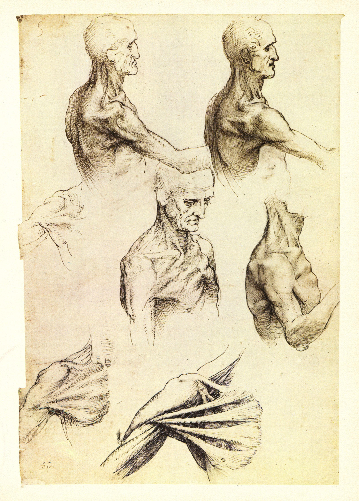

Before we name anything, look. Spend a full minute with the drawing below. Do not read the caption yet. Just move your eye slowly across the page the way its maker did.

Leonardo did not draw the shoulder from memory. He dissected, turned the joint, and drew it again from a new angle, and again, filling the margins with notes about what he found. He drew the same subject repeatedly because each pass revealed something the last one missed. That is observation: not one glance, but sustained, questioning attention.
Your brain is built for speed, not accuracy. When you glance at a cup, your mind files it as "cup" and moves on. It hands you a symbol: a stored shorthand for the idea of a cup. That symbol is why most people, asked to draw a cup from memory, produce the same lopsided oval on a rectangle. They are drawing the label, not the object.
Observational drawing is switching that symbol off and recording what is actually in front of you: true edges, real proportions, light and shadow as they fall. It feels slower because it is: you are trading a fast guess for an accurate record.
🧠 DRAWING THE SYMBOL (from memory)
- Draws the idea of a thing, not the thing
- Relies on what you already "know"
- Flattens form into familiar shapes
- Loses true proportion
- Fast, confident, and usually wrong
👁 DRAWING WHAT YOU SEE (from observation)
- Records the actual edges and angles
- Relies on your eye, checked against the object
- Captures value, weight, and depth
- Preserves real proportion
- Slower, humbler, and far more accurate
not what you know.
Four tools do most of that work, and you will practice each one this Studio. Meet them by name now; you will use them in every lesson that follows.
This course is about making intentional artistic decisions, and you cannot decide what to change about reality until you can record it accurately. That is why the course opens here: composition, color, space, abstraction, and design all assume you can already see.
Your project for these two weeks is called The Extraordinary Ordinary. You will choose one everyday object that means something to you, a worn shoe, a house key, an instrument, a mug, and draw it from direct observation until the viewer sees it as carefully as you learned to. The ordinary becomes extraordinary through attention alone.
▶ Before you read on, name one object near you right now that you could not draw accurately from memory. Then open this.
- 1 Seeing vs. Looking · you are here. Why observation beats memory.
- 2 The Master's Eye · how Leonardo and Chuck Close built whole careers on observation (DAIJ analysis).
- 3 Line & Contour · skill builder: contour, blind contour, negative space.
- 4 Proportion & Value · skill builder: sighting for accuracy, the value scale, shading to form.
- 5 Plan & Create · choose your object, plan the drawing, VR gallery, begin the artwork.
- 6 Refine, Reflect & Present · finish, self-critique, artist statement, portfolio.
Seeing is a skill, not a gift. Leonardo was not born able to draw a shoulder; he earned it one careful pass at a time. For the next two weeks you will do the same with a single ordinary object, and you will be surprised by how much was there all along.